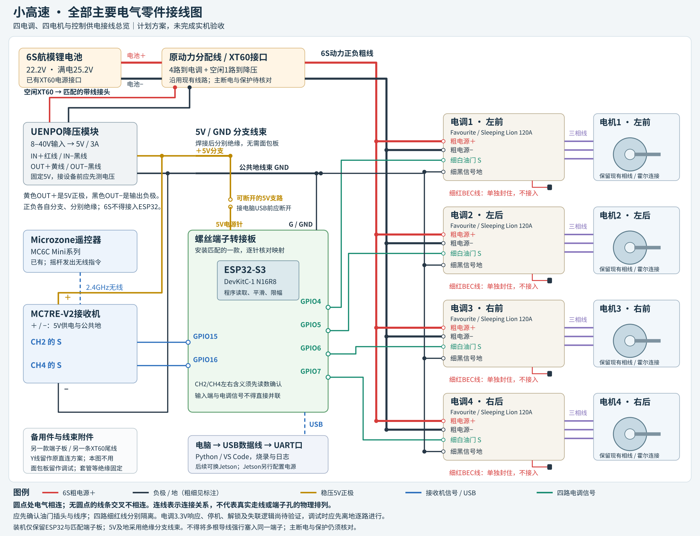
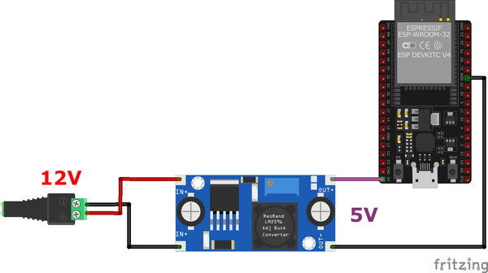
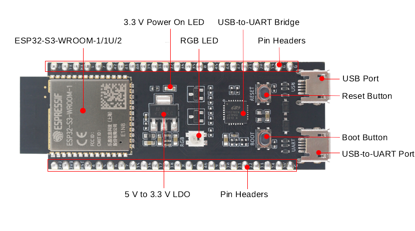
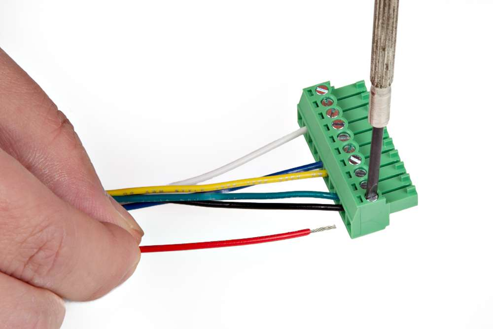
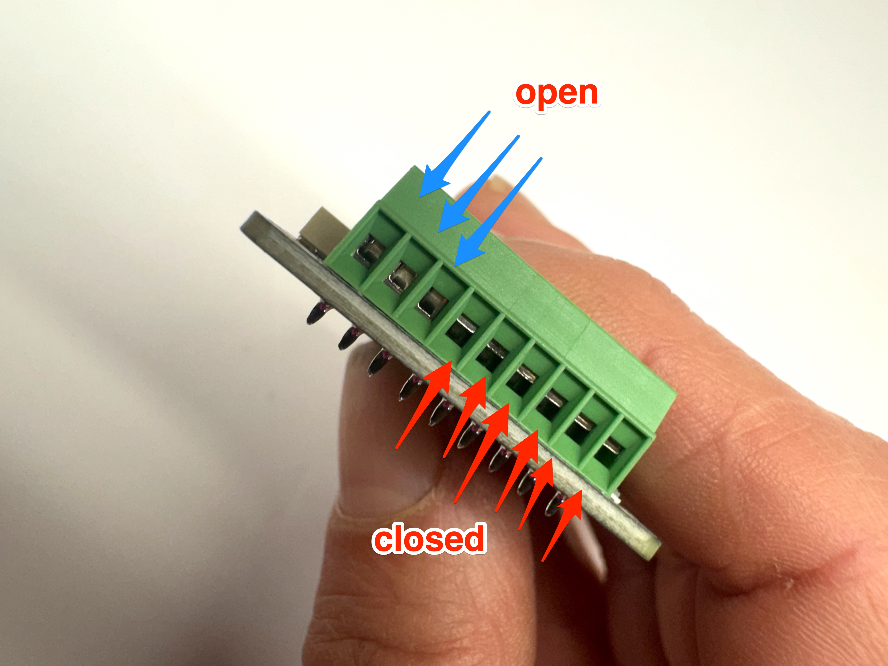
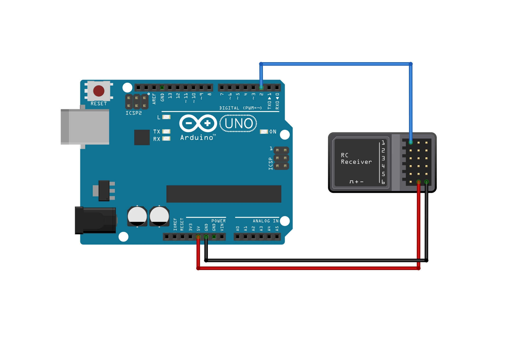
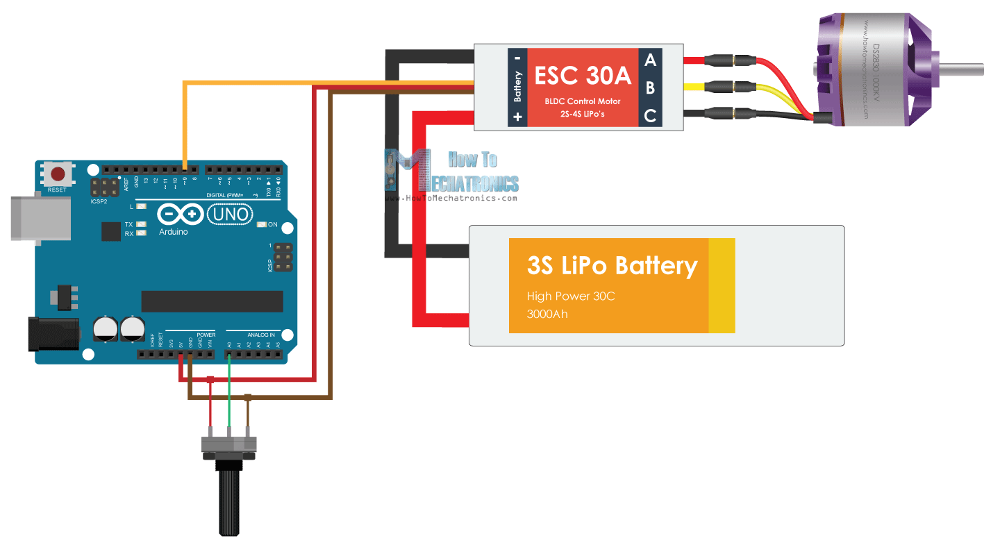
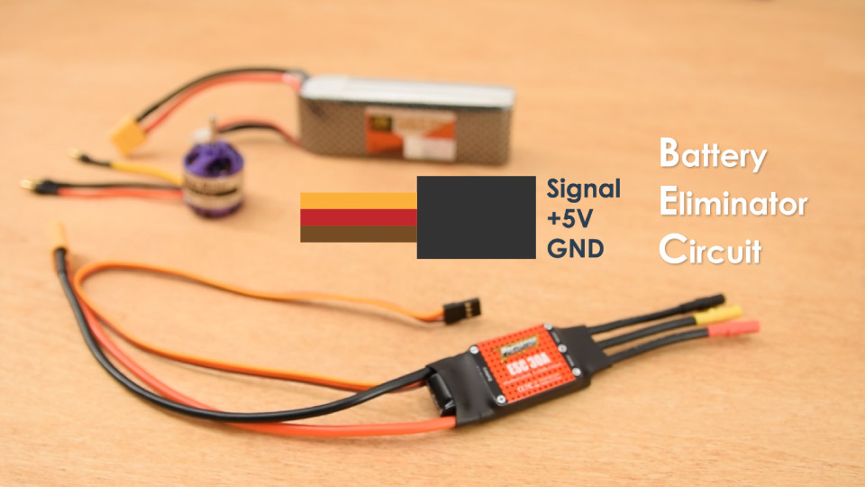
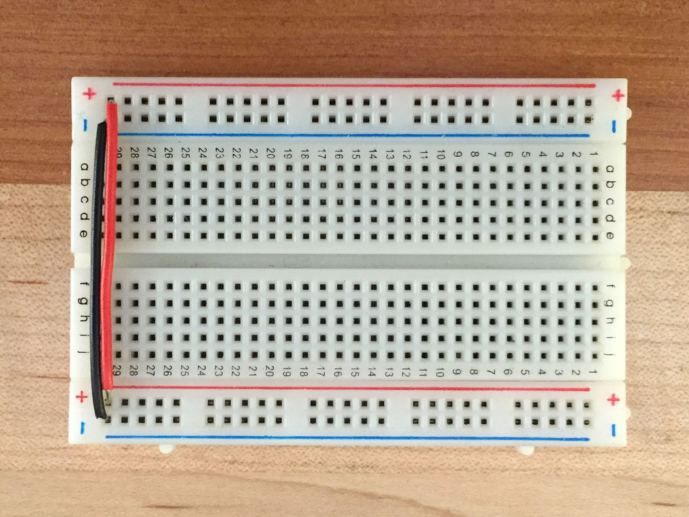
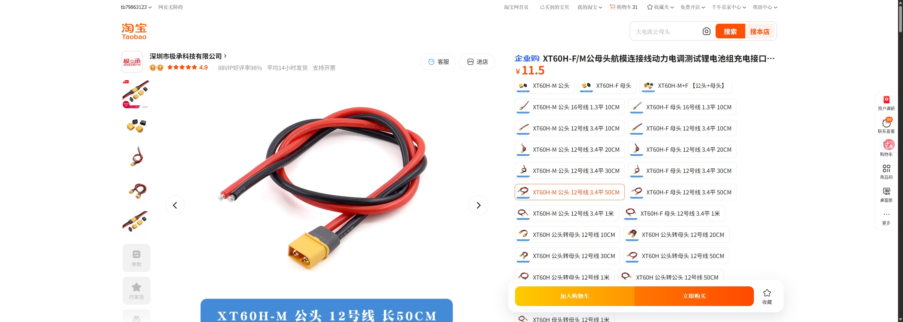

项目_小高速 · 2026-11-05 · 支持离线查看；图片可点击查看原图
小高速样机电气接线图解与实物参考
本图解涵盖：6S电池取电、UENPO降压、ESP32-S3供电、接收机输入、四路电调输出、共地分支及备用面包板参考。网络参考图保留原貌，每张图旁标注本项目对应关系。
当前为计划接线，尚未完成实机验收。到货后应先核对端子板排距、方向及导通，再行接线。示例中的Arduino、其他ESP32及电调型号不代表本机规格；电调停止指令、解锁条件及3.3V信号兼容性仍须逐路验证。

本版已取消面包板装机：四个电调、四台电机、电池、原动力分配、降压、绝缘5V/公共地分支线束、遥控器、接收机、ESP32与端子板及电脑USB绘制于同一张图；面包板及其他备用件单独列出。本图为计划连接总览，端子位置、线序及兼容性仍以实物核对和逐路验证为准。
| 连接 | 本项目约定 |
|---|---|
| 模块输入 | 6S空闲XT60 → UENPO IN＋红线、IN−黑线。 |
| 模块输出 | OUT＋黄线 → ESP32 5V与接收机＋；OUT−黑线 → 公共地。 |
| 遥控输入 | CH2 S → GPIO15；CH4 S → GPIO16。左右含义须先读数核对。 |
| 电调输出 | GPIO4左前、GPIO5左后、GPIO6右前、GPIO7右后。油门信号插头须追线确认。 |
| 公共地 | UENPO输出负极、ESP32 GND、接收机−、四个电调细黑地线相连。 |
| 四路细红线 | 使用独立5V供电后均分别隔离，不得并联。 |
1. 降压模块 → ESP32：输出正负极连接

原图与教程：ESPboards · Buck Converter供电图。下载自原站，未修改原图。
连接要点：电池正负 → IN＋/IN−；OUT＋ → 开发板5V电源针；OUT− → GND。本项目采用6S电池与固定5V输出的UENPO，开发板电源针明确标为5V。
原图采用12V电源、可调模块及另一款ESP32，仅参考连接关系。不得按图另购LM2596，也不得将6S电池接入图中其他小模块。本项目UENPO输出黄线为正极，接线前应按实物标签复测。连接电脑USB时，应断开外部5V至ESP32的正极支路。
查看本项目官方开发板实物位置

以板面正置、天线朝上、USB口朝下为准：左排最底部为G，其上一针为5V。官方J1第21针为5V，第22针为G。该针不是GPIO5，也不接3V3。
2. ESP32与端子板：螺丝端子结构及夹线方法
原图：DIYables厂商产品图。展示相同用途的结构，不代表该产品与已购端子板完全一致。
- ESP32插入中间匹配的黑色母座，先对照两侧引脚标识，确认无反向插入或错位。
- 找到与ESP32
5V针导通的绿色螺丝端子。松开螺丝 → 将导线插入接线孔 → 拧紧 → 轻拉确认夹持牢固。 - 模块黄线接5V对应端子，模块输出黑线接GND对应端子；铜线不得露出孔外。
这两张图用于识别结构及夹线方法。图中板型、USB接口、排距及端子布局尚未与到货实物核对，不得按图示孔位直接接线；也不得默认任意两个GND或5V端子已导通，应先测量导通。同一端子能否夹持多根导线取决于端子规格，不得强行塞入。
杜邦分线器与GND端子：实物夹线参考
保留普通公对公杜邦线一端，插入一分五线分线器的单个母头；另一端剪去接头、剥开短段绝缘皮，将裸铜线夹入端子板GND对应接线孔。不得剪断分线器，也不得将黑色塑料插头塞入螺丝端子。

SparkFun原厂装配教程。图中示出导线、侧面接线孔及上方螺丝刀。

Adafruit原图：蓝色箭头open表示夹口打开，红色箭头closed表示夹口关闭。
照片为同类螺丝端子的操作参考，并非本机分线器已装配的照片。到货后应确认实际端子的夹线范围；拧紧后轻拉检查，孔外不得留有裸铜。
一母分五公分线器可使用其中四个公头连接四路电调细黑线对应插孔，第五个公头单独绝缘。接收机负极与降压输出负极分别接其他GND端子；接线前核对端子映射及导通。该分线器仅用于控制侧地线，不得通过电机动力电流。
3. 接收机 → 控制板：单通道三针接法

原图：Dave Madison，Parts Not Included · RC Receiver接控制板。
图中蓝线为S信号、红线为＋电源、黑线为−地。每个通道均含S/＋/−三针，并非整台接收机仅有三针。原图仅绘制一路，本项目读取两路。
| 原图概念 | 本项目实际连接 |
|---|---|
| 蓝色S信号线 | CH2 S接GPIO15；CH4 S接GPIO16，两根分别接。 |
| 红色供电线 | 接收机＋由UENPO 5V供电。桌面USB调试时，不采用原图中由开发板5V针为接收机供电的方式。 |
| 黑色地线 | 接收机−接公共地，与ESP32 GND和UENPO输出负极相连。 |
原图为Arduino Uno，不得照抄D2等针号或5V信号假设。本机MC7RE-V2说明书标注PWM高电平为3.3V、接收机供电4.5～6V；供电电压与信号电平为两项独立参数。实物S/＋/−朝向应按接收机标识确认。
本机型号依据：MC7RE-V2原厂说明书镜像，第2、4页。
4. 控制板 → 电调 → 无刷电机：粗线与细线连接

原图：Dejan，How To Mechatronics · ESC/BLDC接线教程。
结构要点：电池正负粗线接入电调；三根电机相线由电调引出；控制板通过细信号线控制电调，且信号地相连。本项目按相同结构重复四路。
原图使用ESC的BEC红线为Arduino供电，本项目不采用该方式。本机已有独立UENPO，四个电调细红线均隔离；信号接GPIO4/5/6/7，细黑线接公共地。原图中的电位器、3S/30A示例规格、代码及校准步骤均不适用于本机。
展开查看电调三芯插头与粗动力线实物照片

细插头颜色可能为白红黑或橙红棕，应按S/电源/地标识及实际线序确认，不得仅凭颜色判定编程线与油门线。三芯母插头转接面包板可使用已购公对公跳线，红线孔不转接。
5. 共地方式与面包板定位

原图与教程：Adafruit · Breadboard Tips & Tricks。
本版装机方案取消面包板。降压输出黄线分配给接收机＋及ESP32可断开的5V支路；降压输出黑线、接收机−与四路电调细黑地线可靠汇合后，接ESP32 GND。采用焊接分支并分别热缩绝缘，不得裸线拧接后仅包胶带。下方原图仅用于理解备用面包板的导通结构。
| 公共地连接 | 需要汇合的线 |
|---|---|
| 共7个设备连接点 | UENPO输出负极1、ESP32 GND 1、接收机− 1、四电调细黑线4。 |
| 5V正极分配 | UENPO输出黄线 → 接收机＋及ESP32外部5V支路；电脑USB调试时应断开ESP32的外部5V正极支路。 |
长电源排可能中间断开，两侧不默认相通，使用前应测量导通。动力电池输入及电机相线不得经过面包板；面包板仅用于小电流控制侧桌面调试。最终装机应保证夹线可靠、线束固定。
6. XT60与导线：带线插头实物参考

本图为用户提供的电商平台商品截图，非本机实测照片。焊接照片教程另见：Oscar Liang · Soldering Guide，Soldering XT60 Connectors部分。该教程图片下载时返回站点验证页，未将验证页作为照片保存。
本项目选用公母带尾线各一条，使用时选用可配对的一条。已有带线插头时，仅需将尾线接至UENPO输入，通常无需重焊XT60本体。施工前应完全断开电池；红正黑负，正负焊点分别绝缘并固定。
本项目取电使用现有空闲XT60，不要求拆换电池自身接头。尾线应可靠连接并分别绝缘，不得以裸焊点状态直接装机。
到货后五步核对流程
- ESP32仅接电脑USB：使用Micro-USB数据线接UART口；确认识别、烧录及日志，不接电调动力。
- UENPO单独上电：暂不连接ESP32与接收机，测量OUT＋/OUT−之间电压约为5V且极性正确。
- 接入接收机：UENPO为接收机供电，USB为ESP32供电，两者共地；先仅读取CH2与CH4，核对摇杆、回中及失联输出。
- 单路电调离地：确认本款电调信号、停机及解锁条件后进行低输出测试；固件完成前不得接入运行。
- 扩展四路：逐路确认电机位置、方向、失联及复位行为后，再落地运行。
参考视频
- How To Mechatronics：电调与无刷电机原理、接线实物。用于了解线组与连接结构，不采用示例校准参数。
- Andy Vickers：RC接收机接Arduino；1:31开始接线图。GPIO按本项目定义替换。
- Science Buddies：面包板插线示范。原视频需联网观看，图片及本页可离线查看。